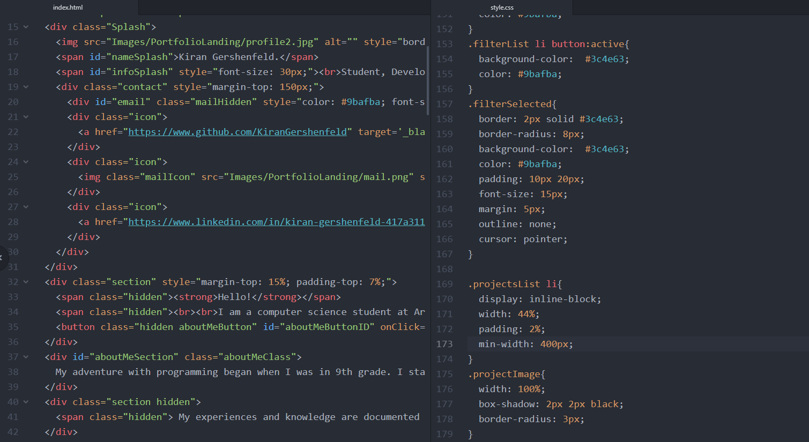

Portfolio Website

Project Description
Written entirely from scratch this website is where I've documented my projects.
The website demonstrates skills in responsive design, animation, and communication. I am fully self taught in HTML, CSS, and JQuery and this website is documentation of that skillset.
Technical Sheet
These are the languages, topics, and frameworks explored in this project
- HTML
- CSS
- JQuery
- Design
Background Story
After spending several years pursuing whatever coding project interested me, I ended up with a few projects that I felt proud of and wanted to share with other people. I knew portfolio websites were common but it didnt feel right to show off my coding projects without coding the website myself. It was significantly more work than I expected but ultimately I am proud to be able to say that my web presence is 100% my own making.
Let's Chat!
Contact me at kiran@gershenfeld.orgLink in at linkedin.com/KiranGershenfeld
Find Me at github.com/KiranGershenfeld